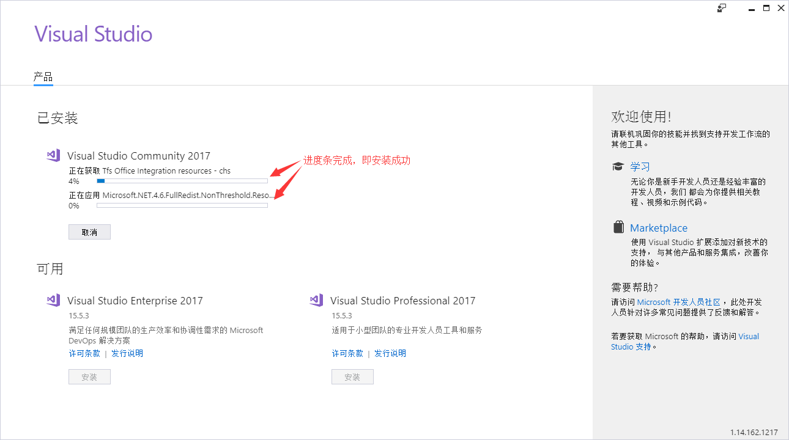
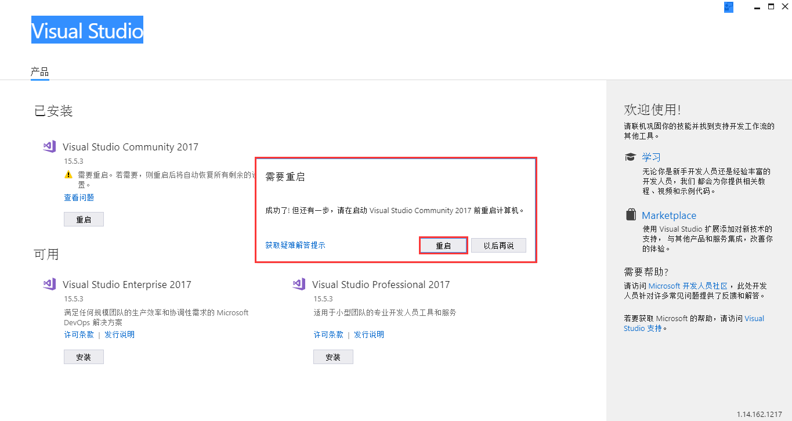
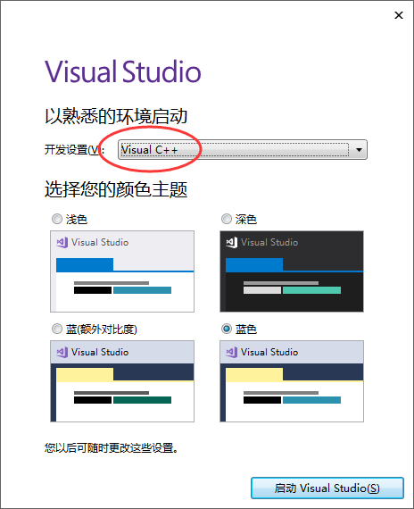
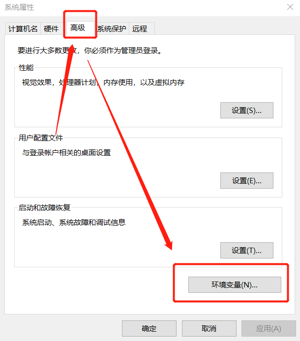
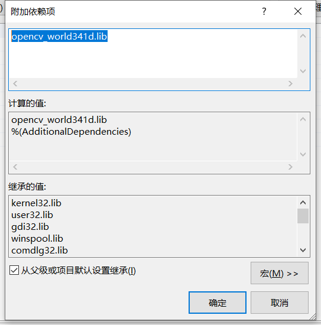

Email : zengf.hou@bit.edu.cn
Welcome to exchange and study！
Due to the needs of research, I needs to use OpenCV to carry out related image processing work. However, Ir has taken a lot of detours in the process of installing and configuring opencv environment. In order to let the latecomers avoid detours, I decided to share my specific configuration process for reference.
Tip：The installed OpenCV version needs to strictly correspond to the Visual Studio version to avoid unnecessary trouble.
Version Requirements：Visual Studio 2017 Community Edition, OpenCV 3.4.1
1. Download
Firstly, we need to download the relevant softwares. For your convenience, the following two download websites are given. You can download them according to your needs.
1.1 Download VS 2017
- From microsoft website
The latest version of VS has been released. You need to log in to your own Microsoft account to get the access, otherwise you can't download it.
Microsoft Link: https://docs.microsoft.com/en-us/visualstudio/releasenotes/vs2017-relnotes
- From the baidu netdisk
In fact, no matter where you download it, what you download is merely a 1M installation boot program. So for your convenience, here is the vs2017 community version of the installation boot program that I collected. You can download it from my Baidu network disk.
Baidu netdisk link: https://pan.baidu.com/s/1jJXyRMA Password: ub6c
1.2 Download OpenCV
- From the opencv website(recommendation)
It is strongly recommended that readers download from the official website. Here, readers can download relevant versions according to their own needs, because I am using vs2017, which is compatible with opencv3.4.1. Therefore, opencv3.4.1 is taken as an example to illustrate. Firstly, from opencv website: <Microsoft Link: https://opencv.org/ enter the opencv releases page to find the corresponding version, and click the download link of “windows”。And then it will jump to sourceforge.net website. Waiting a few seconds, the browser will automatically start to download, the processing will be a little longer, so you need to wait patiently.
Opencv website: https://opencv.org/
- From the baidu netdisk
Baidu netdisk link: https://pan.baidu.com/s/1aJo32Si8mM73ZQ_PIfieOA Password: oq64
2. Installation
The specific installation process is as follows:
2.1 the installation of VS 2017
After downloading vs 2017, you will get an executable file to guide users to install. Double click the file to enter the installation page if there is no problem with the. Net Framework version.

Click the “continue” button directly, and a progress bar will pop up.

After visual studio is ready, it will jump to the following page directly.
Vs 2017 not only supports C / C + + development, but also supports C #, F#, Visual Basic and other development languages. We don’t need to install all the components, just need to install "desktop development using C ++". At the same time, on this page, you can also select the storage location of vs 2017. It is recommended not to install it on disk C. you can select other disks. Then click installation directly. The installation process may take a while. Please wait patiently.
After the installation is completed, some computers will appear VS 2017 need to restart the computer. Save the saved information and restart it as required.
After the restart, you will find an icon called “Visual Studio 2017” in the "Start Menu", which proves that your installation is successful.
Double click to start visual studio 2017. You will be prompted to log in. You can skip it directly. We’ll talk about it later.
After successful installation, the first usage of VS 2017 requires simple configuration, including the development environment and the theme style. We use VS 2017, mainly for C / C + + program development, so select the option of "Visual C + +", as for the color theme, you can choose one from four, and then click the "start visual studio" button.
Finally, wait a few minutes for VS2017 to start successfully!
2.2 the installation of OpenCV3.4.1
After installing VS2017, the following is the configuration and installation of OpenCV. Finding the previously downloaded installation package, double-click to run opencv-3.4.1-vc14_ Vc15.exe (this is actually a extraction process). When you install the file, the extraction path is asked. Extraction is the installation.
Tip: the extraction path do not contain Chinese characters and spaces.
3. Environment Configuration
After installing VS2017 and opecv3.4.1, we need to configure them, especially opencv, because its installation process is actually a unzipping process, and its registry and environment variables are not automatically written. Therefore, we need to manually configure the environment variables before using them.
3.1 The setting of OpeCV environment variable
Right-click this computer, select "Properties", select "Advanced System Settings" in the control panel, select "Advanced" in the pop-up system properties panel, and then select the bottom "Environment Variables". details as follows:
There are two ways to configure environment variables: one is to add them to user variables, the other is to add them to system variables. Here you can choose according to the needs of the readers. Difference: in the user variable, only the user can use it, but other users of this computer can’t use it. In the system variables added to the entire computer, all users can use. Here I added it to the system variable. After selection, click the Edition button below to add the path.
Fill in the path in the edit environment variable window, and add the bin's path under the previously unzipped (installed) opencv path to the path system environment variable. Here, add it according to your own storage path. Such as my storage path is "D:\Program Files\opencv\build\x64\vc15\bin"
3.2 Configuring Opencv in VS2017
Open vs2017 and create a project.
In the New Project dialog box, select an empty project, modify the name and storage location, and click OK.
After creating a project, in the property manager window(属性管理器) on the right, right-click to create a project and click properties(属性) to set it.
At this time, you can jump directly to the property page configuration window below.
Or open the property manager of the project. I configure it under debug x64. “视图” -> “其它窗口” -> “属性管理器”
Next, right-click “debug | x64” in the opened property manager, and select “property (R)” in the pop-up menu
This operation can also jump to the configuration window of the property page below.

Next, add the included directory, first modify the included directory, select it and then click Edit.
VC++ 目录 -> 包含目录-> 编辑
Click the folder flag to create a new folder, and then select the directory.
Add three variables as shown in the figure below in turn (that is, the build folder under the previously unzipped opencv path), and click OK.
- D:\Program Files\opencv\build\include
- D:\Program Files\opencv\build\include\opencv
- D:\Program Files\opencv\build\include\opencv2

Next, repeat this process, and add the following variables to the Library Directory (that is, lib under the previously unzipped opencv path and the number of running bits), and click OK. VC + + Directory > Library Directory > Edit (VC++ 目录 -> 库目录 -> 编辑)
- D:\Program Files\opencv\build\x64\vc15\lib
Next, add dependencies(依赖项)，and modify additional dependencies(附加依赖项)，The platform still selects x64 and adds a variable (manually input or paste)opencv_world341d.lib. Click OK.
链接器 -> 输入 -> 附加依赖项
Manual input: opencv_world341d.lib
Tips:
- 341 corresponds to opencv3.4.1. If the installed version of OpenCV is not 3.4.1, please go to the internet to find your own version or accord to the installation file opencv-3.4.1-vc14_ vc15. exe (openCV – the version) to modify.
- D after version represents debug mode. If it is the release mode, D should be removed. Choose debug mode or release mode according to personal situation.
So far, opencv3.4.1 and vs2017 development environment have been configured successfully. Finally, create a new project to test whether the configuration is successful. Right click the source file, add > new item
Enter the following code to test!
Reference:
- http://c.biancheng.net/view/456.html
- https://www.cnblogs.com/fsong/p/10295183.html